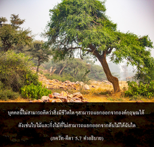

ผู้ที่ทำงานด้วยการอุทิศตนเสียสละ มีดวงวิญญาณบริสุทธิ์สามารถควบคุมจิตใจ และประสาทสัมผัสของตนเองได้จะเป็นที่รักของทุกคน และทุกคนก็เป็นที่รักของเขา แม้ทำงานอยู่ตลอดเวลาแต่บุคคลเช่นนี้จะไม่มีวันถูกพันธนาการ



ผู้ที่อยู่บนหนทางแห่งความหลุดพ้นในกฺฤษฺณจิตสำนึกเป็นที่รักยิ่งของทุกๆ ชีวิต และทุกชีวิตก็เป็นที่รักของท่าน ที่เป็นเช่นนี้ได้ก็เนื่องมาจากมีกฺฤษฺณจิตสำนึก บุคคลนี้ไม่สามารถคิดว่าสิ่งมีชีวิตใดๆ สามารถแยกออกจากองค์กฺฤษฺณได้ ดังเช่นใบไม้ และกิ่งไม้ที่ไม่สามารถแยกออกจากต้นไม้ได้ฉันใด ท่านทราบดีว่าจากการรดน้ำที่รากของต้นไม้แล้วน้ำจะถูกแจกจ่ายไปที่ใบและกิ่งก้านทั้งหมด หรือจากการส่งอาหารไปที่กระเพาะอาหารพลังงานจะถูกส่งไปทั่วร่างกายโดยปริยาย เพราะผู้ที่ทำงานในกฺฤษฺณจิตสำนึกเป็นผู้รับใช้ของมวลชีวิตจึงเป็นที่รักยิ่งของทุกๆ คน และเนื่องจากทุกคนได้รับความพึงพอใจจากงานของท่านจึงทำให้มีจิตสำนึกที่บริสุทธิ์ และเพราะว่ามีจิตสำนึกที่บริสุทธิ์จิตใจจึงอยู่ภายใต้การควบคุมอย่างสมบูรณ์ และเนื่องจากจิตใจอยู่ภายใต้การควบคุม ประสาทสัมผัสจึงอยู่ภายใต้การควบคุมด้วยเช่นเดียวกัน เนื่องจากจิตใจตั้งมั่นอยู่ที่องค์กฺฤษฺณเสมอท่านจึงไม่มีโอกาสที่จะเบี่ยงเบนไปจากองค์กฺฤษฺณ หรือเปิดโอกาสให้ประสาทสัมผัสของท่านปฏิบัติในสิ่งที่ไม่ได้เป็นการรับใช้องค์ภควานฺ ท่านจะไม่ชอบฟังอะไรนอกจากเรื่องราวที่เกี่ยวกับองค์กฺฤษฺณ จะไม่ชอบรับประทานอะไรที่ไม่ได้ถวายให้องค์กฺฤษฺณ และจะไม่ปรารถนาจะไปไหนหากองค์กฺฤษฺณทรงไม่มีส่วนร่วม ดังนั้น ประสาทสัมผัสของท่านอยู่ภายใต้การควบคุม บุคคลที่ประสาทสัมผัสอยู่ภายใต้การควบคุมไม่สามารถก้าวร้าวผู้ใด อาจมีคนถามว่า “แล้วทำไม อรฺชุน จึงทรงก้าวร้าวผู้อื่นในสนามรบ ท่านมีกฺฤษฺณจิตสำนึกอยู่ใช่หรือไม่” อรฺชุน ทรงก้าวร้าวโดยผิวเผินเท่านั้น (ดังที่ได้อธิบายไว้แล้วในบทที่สอง) เพราะว่าผู้ที่มารวมกันอยู่ในสนามรบจะยังคงมีปัจเจกชีวิตอยู่ต่อไป เนื่องจากดวงวิญญาณไม่สามารถถูกฆ่าได้ ฉะนั้น ในวิถีทิพย์ไม่มีผู้ใดถูกฆ่าในสนามรบ กุรุกฺเษตฺร เพียงแต่เสื้อผ้าของพวกเขาเท่านั้นที่ได้ถูกเปลี่ยนไปโดยคำสั่งขององค์กฺฤษฺณ ผู้ทรงปรากฏพระวรกายด้วยพระองค์เอง ดังนั้น ในขณะที่ อรฺชุน ทรงต่อสู้อยู่ที่สนามรบ กุรุกฺเษตฺร อรฺชุน ทรงไม่ได้ต่อสู้จริงๆ ท่านเพียงแต่ปฏิบัติตามคำสั่งขององค์กฺฤษฺณด้วยกฺฤษฺณจิตสำนึกที่สมบูรณ์ บุคคลเช่นนี้จะไม่มีวันถูกพันธนาการอยู่ในวิบากกรรม